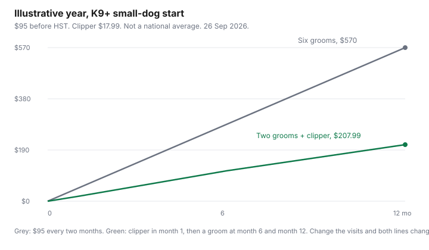

Pets · Canada
DIY Dog Grooming vs Groomer in Canada: What to Do Yourself and What to Pay For
A groom is a size, a coat, and a condition, priced by the salon that will do it. The figure people repeat for doodles, about $80 to $150 and up per visit, was not on a page opened for this draft, so it is not used. What is used are starting prices three Canadian businesses print on their own sites, a nail-clipper price from a Canadian retailer, and a payback that does not pretend a clipper replaces a haircut. Prices move. Confirm the visit. This is not veterinary advice. Ears, nails, and skin that look wrong belong with a veterinarian or a groomer, not with a deeper cut at the kitchen table.
Disclosure: Amazon.ca storefront categories are an offer type. Saving Optimizer may earn a commission if we later add a partner link. We do not currently claim an Amazon partnership, or a partnership with any groomer or tool brand named here. Education only. No product is picked as the best. The Homesalive.ca clipper price is one dated shelf, not a ranking.
Key takeaways
- K9+ on Yonge Street in Toronto, opened 26 Sep 2026: full-service groom starting at $95 for a dog under 20 lb, $130 for 21–40 lb, $160 for 41–70 lb, before HST, and the page says the real price depends on coat and temperament. Nail trim $20.
- Nest in midtown Toronto: full groom starting at $150 for under 20 lb, and the page says prices are estimates and do not include tax. Nail trim $25.
- Pucci-Parlour in Manotick, near Ottawa: a doodle full groom starts at $100 small, $140 medium, $175 large, $220 XL. That is one salon’s starting line, not a Canada-wide doodle range. A 4–8 week full groom for other coats starts lower, at $85+ for a small dog.
- Homesalive.ca lists a Miller’s Forge pet nail clipper at $17.99 (list price $19.49) on the page opened 26 Sep 2026. One K9+ nail trim at $20 is more than that clipper. The clipper does not buy you a bath, a dry, or a haircut.
- Illustrative year, labelled: six K9+ small full grooms at the $95 start is $570 before tax. Two of those grooms plus the $17.99 clipper is $207.99. Change the visits and both numbers change.
Groomer pricing by size and coat
Use a named price from the salon you can actually book. K9+, 2722 Yonge Street, Toronto, opened 26 Sep 2026, describes a full-service groom as a bath, brush-out, fluff dry, sanitary trim, pawdicure, ear cleaning, face trim, and a full-body clip and style. Fifteen minutes of de-matting or de-shedding is included. More time is extra. Hand-scissor styles are an additional $15. Starting prices, subject to HST, and the page says they vary with weight, breed, size, coat length, condition, and temperament: under 20 lb $95, 21–40 lb $130, 41–70 lb $160, 71–95 lb $190, over 95 lb $210. Bath and tidy starts lower ($80 for a small dog). Bath and dry starts at $70 for a small dog. A nail trim is $20, or 10 trims for $180. A first-time grooming appointment needs a $60 plus HST deposit, refundable if you cancel at least 24 hours ahead. Repeat clients who cancel inside 24 hours can be charged 50 percent of the booked service. The page also says the listed prices are starting rates and that the salon cannot quote accurately until it sees the dog.
Nest, 2587 Yonge Street, Toronto, opened 26 Sep 2026, prints a full groom starting at $150 for under 20 lb (about 2 hours 15 minutes), $175 for 21–50 lb, $225 for 51–80 lb, and $275 over 81 lb. Bath and tidy starts at $100 for a small dog. A double coat such as a Samoyed, Chow Chow, Malamute, or Newfoundland is an extra cost on bath and tidy. The page says all prices are estimates, tax is not included, and the final price follows coat, size, behaviour, and breed. A nail trim à la carte is $25. A pawdicure is $35. Extra coat work is $25 per 15 minutes after 15 minutes included in the service.
Pucci-Parlour, 1134 Mill Street, Manotick, opened 26 Sep 2026, prints a doodle full-groom line that starts at $100 small, $140 medium, $175 large, and $220 XL, and says the price moves with size, temperament, coat, and how often you book. Separately, a full groom on a 4–8 week booking starts at $85+ for 8–22 lb, $95+ for 23–49 lb, $120+ for 50–89 lb, and $150+ for 90 lb and up, and includes a bath, brushing, full-body cut, nails, and ear cleaning. The 9–12 week and new-client full groom starts higher, at $95+ for a small dog. A basic nail trim, cut only, is $17. A nail-dremel add-on is $8 to $15. De-matting is $1.50 a minute. These are starting or range prices from that one shop. They are not a provincial average, and they are not the unsourced “$80 to $150 for doodles” line. A medium doodle start of $140 happens to sit inside that band. That is one salon’s floor, not evidence for the band.
Put the three small-dog full-groom floors side by side and you already have $95, $150, and $85, before tax, before coat condition, and before a doodle schedule. Anyone who quotes you one number for “grooming in Canada” is averaging shops that do not average. Get the quote for your dog, in writing, including what happens if the coat is matted.
DIY tools cost and payback
The only tool price opened on 26 Sep 2026 is a Miller’s Forge pet nail clipper at Homesalive.ca, a retailer with a Calgary address and a Kelowna address on the product page: our price $17.99, list price $19.49, described as in stock online, suitable for small to large dogs, with a safety stop the page says keeps the nail at a cutting length meant to avoid the quick. A dryer, a table, a clipper kit, and a shampoo were not priced on a page this build could use. They are not in the payback. Amazon.ca may sell similar tools. The price-tracking guide is how to record that shelf before you buy. This page does not name a clipper as the one to buy.
Payback is the professional service the tool actually replaces. A clipper replaces a nail trim, not a full groom. At K9+ the nail trim starts at $20. The clipper at $17.99 is $2.01 less than that one visit. If you would have booked the $20 trim, the tool is covered on the first trim and the later trims are the gap. At Nest the à la carte nail trim is $25, so the same clipper is $7.01 under one visit. At Pucci-Parlour the basic nail trim is $17, which is $0.99 under the clipper. On that one price, the clipper does not pay back against a single $17 trim. Six illustrative Pucci trims at $17 would be $102, and the clipper is then $84.01 under that year, if you truly do the nails at home six times and never pay the salon for them. That “if” is the whole calculation. A dog that will not give you a paw still needs the $17 visit.
A full groom is a different payback, and the tool does not clear it. Six illustrative visits at the K9+ small-dog full-groom start of $95 is 6 × $95 = $570 before HST. The clipper is $17.99 of that $570, about 3 percent. You would still need the bath, the dry, and the haircut. Calling the clipper a “groomer replacement” misstates the job. The zero-based budget gets a line for the visits you will still book, and a one-time line for the tool. The supplies guide is where a shampoo or a brush gets a unit price, on the day you buy it. Store-brand household logic does not automatically apply to a coat product. The store-brand guide is about paper and detergent, not a medicated shampoo.
Nails, baths, brushing: safe DIY
Nails are the job most often pulled home, and they are the job that goes wrong when the quick is cut. The Homesalive page says its clipper has a stop bar aimed at that problem. A stop bar is not a guarantee. If you cannot see the quick, or the dog has dark nails and you are guessing, stop. K9+ sells a nail trim without selling you the rest of the groom. Nest and Pucci-Parlour do too. A single nail visit is often the cheaper safety valve than a kit you are afraid to use. Do not use a human clipper and do not file down to the skin. This page cannot see your dog.
Baths are a tub, a coat, and a dryer. Pet Valu’s FAQ, opened for the supplies guide on 26 Sep 2026, lists a self-serve dog wash at $15 at many stores, with shampoo, a high-velocity dryer, towels, and an apron. It also says blades such as nail trimmers or scissors are not allowed in the wash station. A $15 bath is not a haircut, and it is not a place to learn nails. The FAQ says pets need to be current on rabies vaccine, to wait 48 hours after a vaccine, and to be in good health. Proof of vaccination is required for salon services. If your dog is reactive, the FAQ says some stores may offer a private slot and that you should call. A home bath has the same health limit: a dog that is painful, lethargic, or full of mats is not a Saturday project.
Brushing is the work that stretches the groom, and it is also how you find a mat before it is a shave-down. Fifteen minutes is the block both K9+ and Nest already include before they bill more. A line you can feel with a comb, down to the skin, is a conversation with the groomer or the clinic. Yanking a mat out is how skin tears. Ears are the other stop. Cleaning the flap you can see is not the same as putting a tool into the canal. None of the salon pages opened here tell owners to probe an ear at home. Smell, redness, or discharge is a veterinary question, not a cotton-swab project.
When professionals are worth it
Pay for the groom when the coat, the behaviour, or the medical question is the product. Pucci-Parlour’s doodle prices exist because that coat mats and the full groom includes the cut, the nails, and the ears. Nest charges more, and takes longer, as the dog gets larger, and it adds money for a double coat. K9+ will not lock a quote until it has seen the dog, and it bills extra de-matting. Those are the signals that “I’ll do it at home” is a different service from the one on the website.
A first groom, a dog that panics on a table, a coat that is already felted, and any skin that is broken are professional jobs. So is a breed cut you care about keeping. The DIY case that the prices support is narrower: nails you can see and the dog tolerates, brushing between grooms, and a bath when the dog is well and you can dry the coat. If you are comparing salons, compare the same size row and ask what is included. A $95 start that becomes a matted-coat bill is not the number in the table. The deposit rules matter too. K9+’s $60 plus HST hold on a first visit is money you lose inside 24 hours. A cheap appointment you miss is not cheap.
Stretching time between grooms
Pucci-Parlour already prices frequency. Its 4–8 week full groom starts lower than its 9–12 week and new-client full groom. For a small dog that is $85+ versus $95+. For a large dog it is $120+ versus $150+. The gap is the salon’s own statement that waiting costs more, on that price list, for those bookings. It is not a promise that every coat can go 12 weeks. A doodle line on the same site is priced as its own range and still depends on frequency.
Stretching, on the evidence these pages give you, means the brushing that keeps you inside the shorter booking, not skipping until the coat is a de-matting bill. K9+ includes 15 minutes of de-matting on a full groom and then charges more, and it says excessive shedding on a bath-and-dry can be billed as a full groom. Nest bills extra coat time at $25 per 15 minutes. Two extra quarter-hours is $50 before tax, which is a large slice of a small-dog groom. A comb on the Tuesday between appointments is the lever. A longer gap that produces an hour of de-matting is not a saving.
Book the next visit when you pick the dog up, at the interval the coat actually survived. If you are building the month, put that visit on the budget as a repeating line. Tools you buy once do not get a monthly line after the first month.
Annual cost table
Every annual figure below multiplies a starting price by an illustrative number of visits. The starting price is real and dated. The visit count is not your dog’s count until you write it down. HST is extra where the salon says so. The chart draws two of the rows: six small full grooms at K9+’s $95 start, and a home-nail path that still pays for two of those grooms plus the clipper.
| Job | Dated price | Illustrative year | Against the $17.99 clipper |
|---|---|---|---|
| K9+ nail trim | $20. Ten trims $180. | 6 × $20 = $120. Or the published ten trims at $180. | One $20 trim covers the clipper, with $2.01 left. Only if you do the nails. |
| Nest nail trim | $25, estimate, tax extra. | 6 × $25 = $150. | One visit covers the clipper, with $7.01 left. |
| Pucci-Parlour nail trim | $17 cut only. | 6 × $17 = $102. | One trim is $0.99 under the clipper. The year of six is $84.01 over the tool. |
| K9+ small full groom | Starting at $95, plus HST, coat can change it. | 6 × $95 = $570 before tax. | Not a clipper payback. The tool is $17.99 of a $570 haircut year. |
| Nest small full groom | Starting at $150+, tax extra, estimate. | 6 × $150 = $900 before tax, if the start is the price. | Same limit. Do not mix this row with the K9+ row. They are different shops. |
| Pucci-Parlour doodle, small | Full groom starting at $100. | 6 × $100 = $600, if you stay at the start price. | Frequency still changes the bill. The other coat’s 4–8 week small groom starts at $85+. |
| Home nails plus two K9+ small grooms | Clipper $17.99 once. Groom start $95. | $17.99 + (2 × $95) = $207.99 before tax on the grooms. | Against six grooms at $570, the gap is $362.01, and only if two grooms really keep the coat. Labelled illustration. |

Sources & date stamps
- K9+, dog grooming, k9plus.ca, 2722 Yonge Street, Toronto, opened 26 Sep 2026. Full-service starts, nail trim, deposit, and the note that prices vary and HST applies.
- Nest grooming studio, services, nestgroomingstudio.ca, 2587 Yonge Street, Toronto, opened 26 Sep 2026. Size chart, nail trim, double-coat note, tax extra.
- Pucci-Parlour, dog grooming, pucciparlour.ca, 1134 Mill Street, Manotick, opened 26 Sep 2026. Doodle starts, 4–8 week and 9–12 week full grooms, nail trim $17.
- Homesalive.ca, Miller’s Forge pet nail clipper, opened 26 Sep 2026. $17.99, list $19.49. No dryer, table, or shampoo price was opened. The unsourced “$80–$150+” doodle visit is not used.
Frequently asked questions
How much does dog grooming cost in Canada?
Named salons, not a national range. K9+ in Toronto starts a full groom under 20 lb at $95 before HST. Nest on Yonge starts a small full groom at $150. Pucci-Parlour in Manotick starts a doodle full groom at $100 for a small dog, and the unsourced national doodle visit is not used.
What grooming can I safely do at home?
Brushing a coat that is not matted, and a bath you can rinse and dry, are the home jobs these salon pages leave between visits. Nail trims are sold as a short service, $17 to $25 at the salons named here, because the quick can be cut. Ears are not a home surgery, and if the dog is in pain, stop and book a professional. This is not veterinary advice.
What tools do I need?
The only tool price opened on 26 Sep 2026 was a Miller's Forge nail clipper at $17.99 on Homesalive.ca, against a list price of $19.49. No dryer, table, or shampoo price was opened, so those are not in the payback. One K9+ nail trim at $20 covers that clipper with $2.01 left. A clipper does not replace a full groom.
When is a professional groomer worth it?
When the coat is matted, the dog will not stay still for nails, or the salon says a double coat or a doodle cut is extra work. K9+ says it cannot quote until it sees the dog, and prices vary by coat and temperament. A first-appointment deposit there is $60 plus HST. Pay for the job that can injure the animal if you miss.
How can I stretch time between grooms?
Pucci-Parlour's own chart charges more when the gap is 9 to 12 weeks than when it is 4 to 8 weeks, on the small-dog row ($95 versus $85). Brushing between visits is the lever that page is describing. Six K9+ small full grooms at $95 are $570 before tax. Two of those grooms plus the $17.99 clipper are $207.99, and only if two grooms really keep the coat.